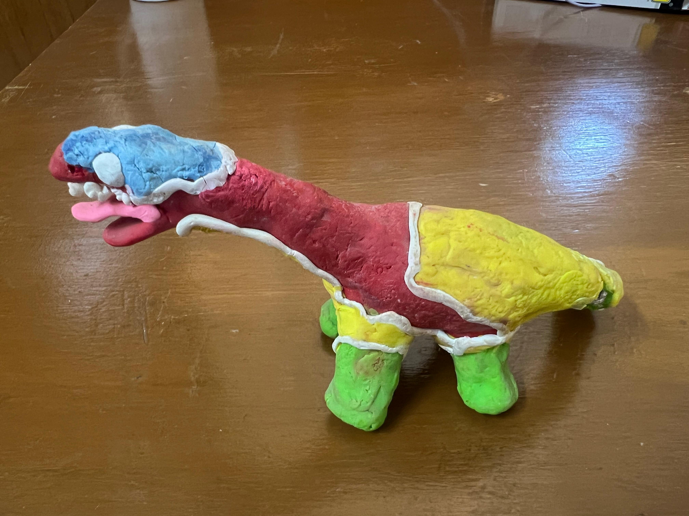
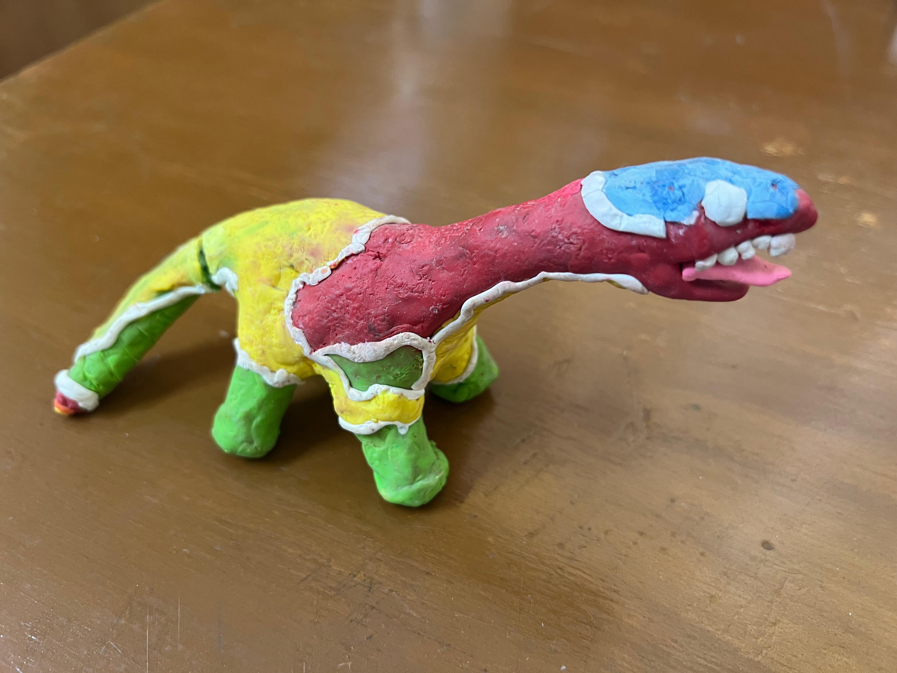
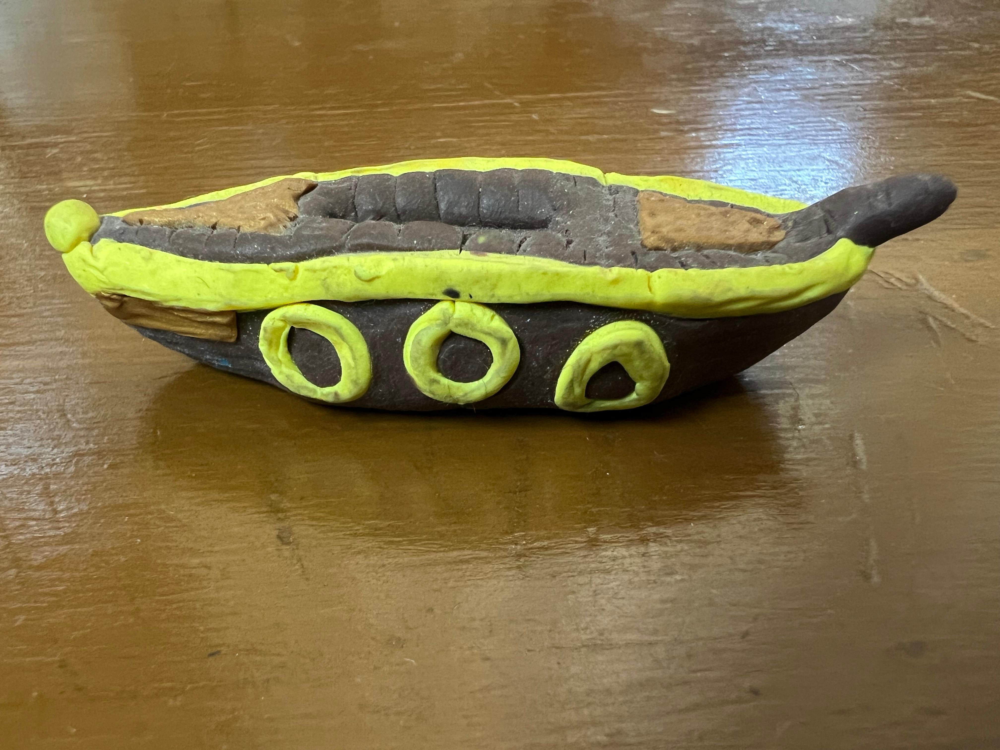
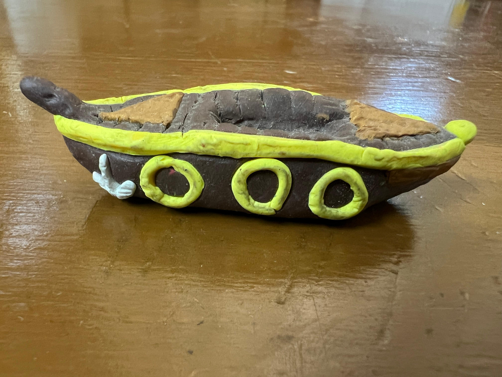
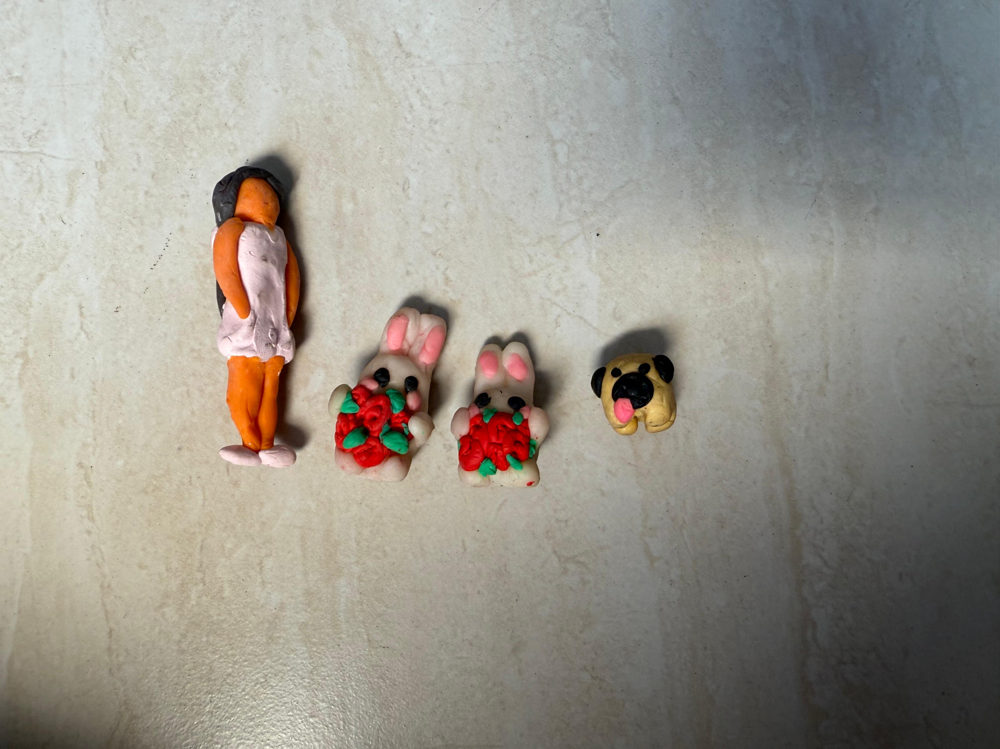
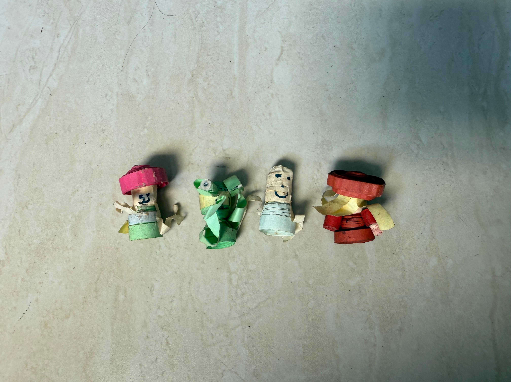

CRAFTS
Clay and Quilling
These are some small clay and quilling projects I made on my own during Covid. I liked trying out different materials and making small handmade pieces that each had their own personality.

Clay Dinosaur
I made this dinosaur during Covid. For the dinosaur, I used an aluminum structure underneath and then added clay on top. The structure helped support the model and preserve the shape of the clay.

Clay Boats
I also made these small clay boats. I liked working on the shape and details to make them feel a little more playful and finished.


Small Clay Characters
I made these tiny clay characters as well. They were really fun to make because each one could have its own colors and expression.

Quilling Pieces
I also experimented with quilling and made these tiny paper characters. I liked how a simple rolled strip of paper could turn into something expressive.
